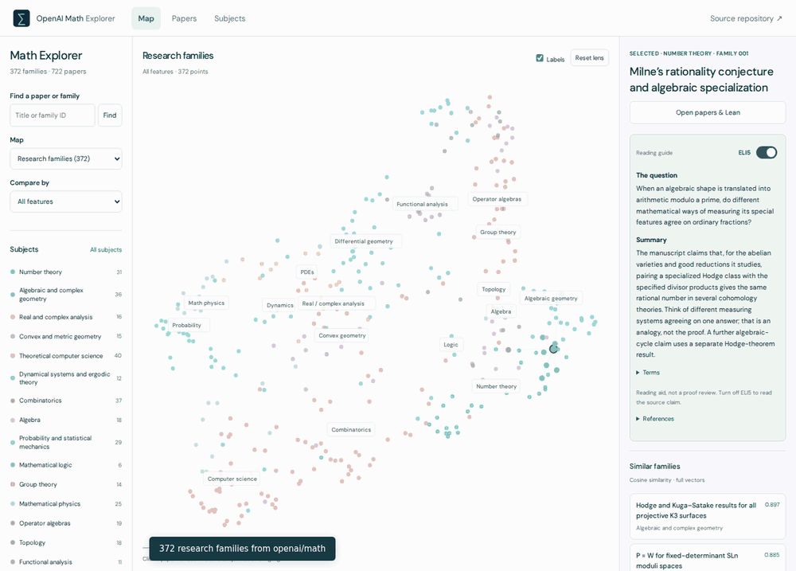

<!doctype html><html lang="en"><meta charset="utf-8"><meta name="viewport" content="width=device-width,initial-scale=1"><title>Math Explorer · Demo</title><style>body{margin:0;background:#071e2b;color:#ecf5f4;font:16px/1.6 system-ui;padding:5vw}main{max-width:1100px;margin:auto}h1{font-size:clamp(28px,5vw,48px);letter-spacing:-1.5px;margin-bottom:8px}p{color:#adc5cc}img{display:block;width:100%;border-radius:12px;margin:24px 0}a{display:inline-block;color:#63ddba;margin-right:24px;padding:10px 0}small{letter-spacing:2px;color:#63ddba}</style><main><small>OPENAI MATH EXPLORER</small><h1>OpenAI Math Explorer</h1><p>Select subjects, compare papers, and read the source material.</p><a href="concept-explorer-demo-v2.gif" download>Download GIF ↓</a><a href="tweet-thread.txt" download>Download draft tweet thread ↓</a><a href="../#view=map">Try the explorer ↗</a></main></html>
